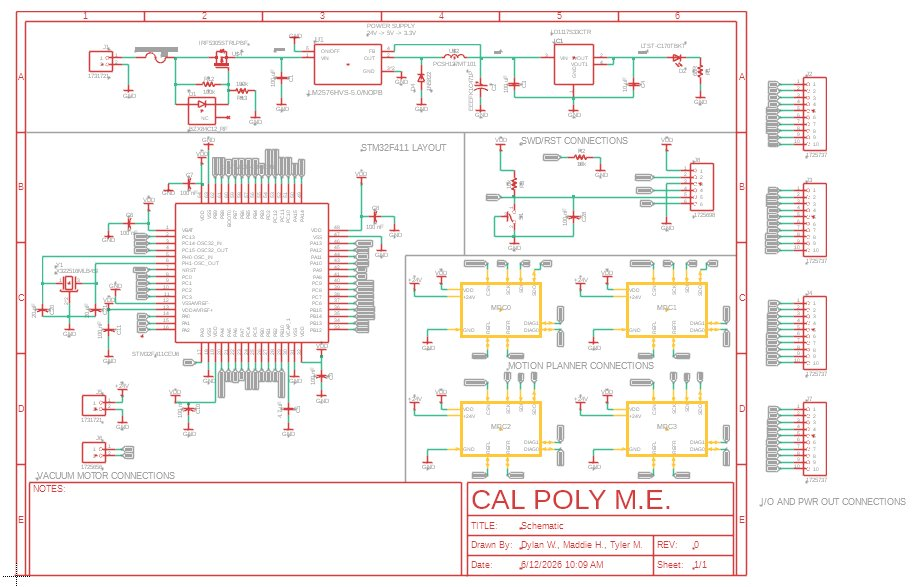
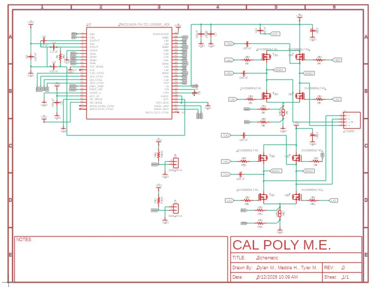
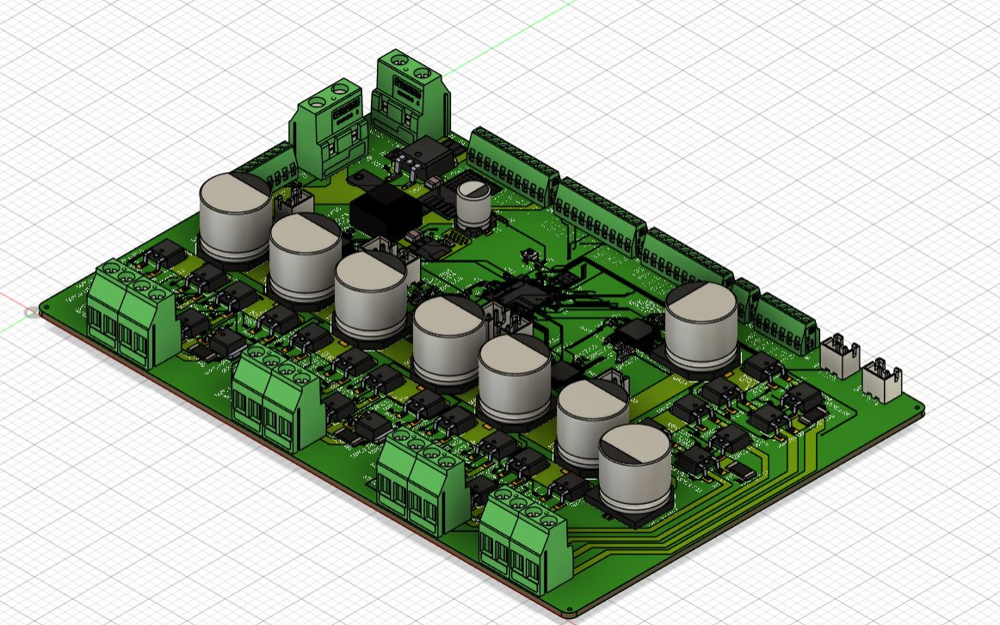

Custom PCB
The control electronics were implemented on a custom four-layer printed circuit board designed specifically for this project. The board accepts a 24-volt input supply and uses a buck converter followed by a linear regulator to generate regulated 5-volt and 3.3-volt rails for the microcontroller and supporting electronics. The PCB is built around an STM32F411RET6 microcontroller with a 64-pin layout and includes SWD debugging support from an ST-Link for firmware development and testing.
A major design decision was to use four TMC5160 stepper motor drivers integrated directly into our PCB. These drivers provide advanced motion control features including acceleration ramps, position control, and limit switch handling. By leveraging the motion control hardware built into the TMC5160 devices, the firmware remains relatively lightweight while still achieving smooth and repeatable motion. The board was implemented as a four-layer design with dedicated ground and power planes to improve routing quality and reduce electrical noise.

Main schematic: STM32 layout, power supply, and connections

Motor driver schematic

3D render of the custom PCB
Generated by